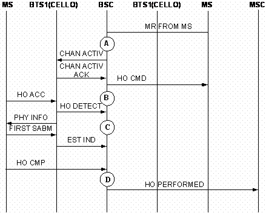

Overview
After seizing a dedicated channel, an MS sends the BSC measurement reports periodically. After receiving the measurement reports, the BSC uses the handover algorithm to decide whether a handover is required or not based on the measurement reports. If a handover is required and the source cell (current cell) is also the target cell, an intra-cell handover is initiated. The BSC sends a CHAN ACTIV message to the BTS where the target cell is located. This message is used to activate the specified channel in the target cell. After receiving a CHAN ACTIV ACK message, the BSC requests for channel resources. If the request succeeds, the BSC sends the MS an HO CMD message, requesting the MS to initiate a handover from the source cell to the target cell. In the intra-cell handover process, the MS sends the target BTS an HO ACC message to attempt to access the new cell. The target BTS forwards this message through an HO DETECT message to the BSC and sends a PHY INFO message to the MS in the case of asynchronous handover. The MS sends a FIRST SABM frame to the target BTS and the target BTS sends an EST IND message to the BSC, indicating that the MS has successfully accessed the target cell. The MS also sends an HO CMP message to the BSC. The BSC sends an HO PERFORMED message to the MSC.
Figure 1 is the flowchart that shows the measurement points of the counters related to intra-cell handover; Figure 2 is the block diagram that shows the measurement points of the counters related to intra-cell handover.

Table 1 describes the measurement points shown in Figure1.
| Measurement points | Description |
|---|---|
| A | Internal Intra-Cell Handover Requests |
| B | Internal Intra-Cell Handover Commands |
| C | Internal Intra-Cell Handover Detection Messages Received by BSC |
| D | Successful Internal Intra-Cell Handovers |

Measurement Counters
| ID | Counter | Description | Original Release |
|---|---|---|---|
| 1278077417 | CELL.INTRACELL.HO.REQ.SD | H3000:Internal Intra-Cell Handover Requests (SDCCH) | Earlier than V900R011 |
| 1278077418 | CELL.INTRACELL.HO.REQ.TCH | H3009:Internal Intra-Cell Handover Requests (TCH) | Earlier than V900R011 |
| 1278077419 | CELL.INTRACELL.HO.CMD.SD | H3010:Internal Intra-Cell Handover Commands (SDCCH) | Earlier than V900R011 |
| 1278077420 | CELL.INTRACELL.HO.CMD.TCHF | H3017:Internal Intra-Cell Handover Commands (TCHF) | Earlier than V900R011 |
| 1278077421 | CELL.INTRACELL.HO.CMD.TCHH | H3018:Internal Intra-Cell Handover Commands (TCHH) | Earlier than V900R011 |
| 1278077422 | CELL.INTRACELL.HO.FAIL.SD | H3020:Failed Internal Intra-Cell Handovers (SDCCH) | Earlier than V900R011 |
| 1278077423 | CELL.INTRACELL.HO.FAIL.TCH | H3029:Failed Internal Intra-Cell Handovers (TCH) | Earlier than V900R011 |
| 1278077424 | CELL.INTRACELL.HO.FAIL.CONG.SD | H3020A:Failed Internal Intra-Cell Handovers (No Channel Available) (SDCCH) | Earlier than V900R011 |
| 1278077425 | CELL.INTRACELL.HO.FAIL.CONG.TCH | H3029A:Failed Internal Intra-Cell Handovers (No Channel Available) (TCH) | Earlier than V900R011 |
| 1278077426 | CELL.INTRACELL.HO.FAIL.APPLY.TRSL.FAIL | H302B:Failed Internal Intra-Cell Handovers (Terrestrial Resource Request Failed) | Earlier than V900R011 |
| 1278077427 | CELL.INTRACELL.HO.FAIL.A.INTERF.FAIL | H302G:Failed Internal Intra-Cell Handovers (A Interface Failure) | Earlier than V900R011 |
| 1278077428 | CELL.INTRACELL.HO.FAIL.EXP.SD | H3020C:Failed Internal Intra-Cell Handovers (Timer Expired) (SDCCH) | Earlier than V900R011 |
| 1278077429 | CELL.INTRACELL.HO.FAIL.EXP.TCHF.SIG | H3027Cb:Failed Internal Intra-Cell Handovers (Timer Expired) (TCHF) (Signaling Channel) | Earlier than V900R011 |
| 1278077430 | CELL.INTRACELL.HO.FAIL.EXP.TCHH.SIG | H3028Cb:Failed Internal Intra-Cell Handovers (Timer Expired) (TCHH) (Signaling Channel) | Earlier than V900R011 |
| 1278077431 | CELL.INTRACELL.HO.FAIL.EXP.TCHF.TRAF | H3027Ca:Failed Internal Intra-Cell Handovers (Timer Expired) (TCHF) (Traffic Channel) | Earlier than V900R011 |
| 1278077432 | CELL.INTRACELL.HO.FAIL.EXP.TCHH.TRAF | H3028Ca:Failed Internal Intra-Cell Handovers (Timer Expired) (TCHH) (Traffic Channel) | Earlier than V900R011 |
| 1278077433 | CELL.INTRACELL.HO.FAIL.RECONN.SUCC.MS.RPT.ABN.RLS.UNSPEC | H302Da:Failed Internal Intra-Cell Handovers (Reconnection to Old Channels) (Abnormal Release, Unspecified) | Earlier than V900R011 |
| 1278077434 | CELL.INTRACELL.HO.FAIL.RECONN.SUCC.MS.RPT.ABN.RLS.CH.UNAC | H302Db:Failed Internal Intra-Cell Handovers (Reconnection to Old Channels) (Abnormal Release, Channel Unacceptable) | Earlier than V900R011 |
| 1278077435 | CELL.INTRACELL.HO.FAIL.RECONN.SUCC.MS.RPT.ABN.RLS.TM.EXP | H302Dc:Failed Internal Intra-Cell Handovers (Reconnection to Old Channels) (Abnormal Release, Timer Expired) | Earlier than V900R011 |
| 1278077436 | CELL.INTRACELL.HO.FAIL.RECONN.SUCC.MS.RPT.ABN.RLS.NO.ACT | H302Dd:Failed Internal Intra-Cell Handovers (Reconnection to Old Channels) (Abnormal Release, No Activity on the Radio Path) | Earlier than V900R011 |
| 1278077437 | CELL.INTRACELL.HO.FAIL.RECONN.SUCC.MS.RPT.PREEMPT.RLS | H302De:Failed Internal Intra-Cell Handovers (Reconnection to Old Channels) (Preemptive Release) | Earlier than V900R011 |
| 1278077438 | CELL.INTRACELL.HO.FAIL.RECONN.SUCC.MS.RPT.HO.IMPSBL.TA | H302Df:Failed Internal Intra-Cell Handovers (Reconnection to Old Channels) (Handover Failed, Timing Advance out of Range) | Earlier than V900R011 |
| 1278077439 | CELL.INTRACELL.HO.FAIL.RECONN.SUCC.MS.RPT.NO.CH.MODEL | H302Dg:Failed Internal Intra-Cell Handovers (Reconnection to Old Channels) (Channel Mode Unavailable) | Earlier than V900R011 |
| 1278077440 | CELL.INTRACELL.HO.FAIL.RECONN.SUCC.MS.RPT.FREQ.NOT.IMP | H302Dh:Failed Internal Intra-Cell Handovers (Reconnection to Old Channels) (Frequency Unavailable) | Earlier than V900R011 |
| 1278077441 | CELL.INTRACELL.HO.FAIL.RECONN.SUCC.MS.RPT.CALL.CLR | H302Di:Failed Internal Intra-Cell Handovers (Reconnection to Old Channels) (Call Already Cleared) | Earlier than V900R011 |
| 1278077442 | CELL.INTRACELL.HO.FAIL.RECONN.SUCC.MS.RPT.SMN.INCRCT.MSG | H302Dj:Failed Internal Intra-Cell Handovers (Reconnection to Old Channels) (Semantically Incorrect Message) | Earlier than V900R011 |
| 1278077443 | CELL.INTRACELL.HO.FAIL.RECONN.SUCC.MS.RPT.INVLID.MAN.INFO | H302Dk:Failed Internal Intra-Cell Handovers (Reconnection to Old Channels) (Invalid Mandatory Information) | Earlier than V900R011 |
| 1278077444 | CELL.INTRACELL.HO.FAIL.RECONN.SUCC.MS.RPT.MSG.TYPE.NONEXT | H302Dl:Failed Internal Intra-Cell Handovers (Reconnection to Old Channels) (Message Type Non-existent or Not Implemented) | Earlier than V900R011 |
| 1278077445 | CELL.INTRACELL.HO.FAIL.RECONN.SUCC.MS.RPT.MSG.TYPE.NOT.CM | H302Dm:Failed Internal Intra-Cell Handovers (Reconnection to Old Channels) (Message Type Not Compatible with Protocol State) | Earlier than V900R011 |
| 1278077446 | CELL.INTRACELL.HO.FAIL.RECONN.SUCC.MS.RPT.CDT.IE.ERR | H302Dn:Failed Internal Intra-Cell Handovers (Reconnection to Old Channels) (Conditional IE Error) | Earlier than V900R011 |
| 1278077447 | CELL.INTRACELL.HO.FAIL.RECONN.SUCC.MS.RPT.NO.CELL.ALLOC | H302Do:Failed Internal Intra-Cell Handovers (Reconnection to Old Channels) (No Cell Allocation Available) | Earlier than V900R011 |
| 1278077448 | CELL.INTRACELL.HO.FAIL.RECONN.SUCC.MS.RPT.PTCL.ERR.UNSPEC | H302Dp:Failed Internal Intra-Cell Handovers (Reconnection to Old Channels) (Protocol Error Unspecified) | Earlier than V900R011 |
| 1278077449 | CELL.INTRACELL.HO.FAIL.RECONN.SUCC.MS.RPT.OTHER | H302Dq:Failed Internal Intra-Cell Handovers (Reconnection to Old Channels) (Other Causes) | Earlier than V900R011 |
| 1278077450 | CELL.INTRACELL.HO.REQ.ULCELL.OLCELL | H3002:Internal Intra-Cell Handover Requests (Underlaid to Overlaid) | Earlier than V900R011 |
| 1278077451 | CELL.INTRACELL.HO.REQ.OLCELL.ULCELL | H3001:Internal Intra-Cell Handover Requests (Overlaid to Underlaid) | Earlier than V900R011 |
| 1278077452 | CELL.INTRACELL.HO.CMD.ULCELL.OLCELL | H3012:Internal Intra-Cell Handover Commands (Underlaid to Overlaid) | Earlier than V900R011 |
| 1278077453 | CELL.INTRACELL.HO.CMD.OLCELL.ULCELL | H3011:Internal Intra-Cell Handover Commands (Overlaid to Underlaid) | Earlier than V900R011 |
| 1278077454 | CELL.INTRACELL.HO.FAIL.CONG.ULCELL.OLCELL | H3022A:Failed Internal Intra-Cell Handovers (No Channel Available) (Underlaid to Overlaid) | Earlier than V900R011 |
| 1278077455 | CELL.INTRACELL.HO.FAIL.CONG.OLCELL.ULCELL | H3021A:Failed Internal Intra-Cell Handovers (Channel Unavailable) (Overlaid to Underlaid) | Earlier than V900R011 |
| 1278077456 | CELL.INTRACELL.HO.FAIL.OTHERS.ULCELL.OLCELL | H3022M:Failed Internal Intra-Cell Handovers (Other Causes) (Underlaid to Overlaid) | Earlier than V900R011 |
| 1278077457 | CELL.INTRACELL.HO.FAIL.OTHERS.OLCELL.ULCELL | H3021M:Failed Internal Intra-Cell Handovers (Other Causes) (Overlaid to Underlaid) | Earlier than V900R011 |
| 1278077472 | CELL.INTRACELL.HO.REQ.AMR.TCHF.TCHH | H3005A:Internal Intra-Cell Handover Requests (AMR) (TCHF-TCHH) | Earlier than V900R011 |
| 1278077473 | CELL.INTRACELL.HO.REQ.AMR.TCHH.TCHF | H3005B:Internal Intra-Cell Handover Requests (AMR) (TCHH-TCHF) | Earlier than V900R011 |
| 1278077474 | CELL.INTRACELL.HO.CMD.AMR.TCHF.TCHH | H3015A:Internal Intra-Cell Handover Commands (AMR) (TCHF-TCHH) | Earlier than V900R011 |
| 1278077475 | CELL.INTRACELL.HO.CMD.AMR.TCHH.TCHF | H3015B:Internal Intra-Cell Handover Commands (AMR) (TCHH-TCHF) | Earlier than V900R011 |
| 1278077476 | CELL.INTRACELL.HO.FAIL.AMR.TCHF.TCHH | H3025A:Failed Internal Intra-Cell Handovers (AMR) (TCHF-TCHH) | Earlier than V900R011 |
| 1278077477 | CELL.INTRACELL.HO.FAIL.AMR.TCHH.TCHF | H3025B:Failed Internal Intra-Cell Handovers (AMR) (TCHH-TCHF) | Earlier than V900R011 |
| 1278077478 | CELL.INTRACELL.HO.DETECT.SD | H3040:Internal Intra-Cell Handover Detection Messages Received by BSC (SDCCH) | Earlier than V900R011 |
| 1278077479 | CELL.INTRACELL.HO.DETECT.TCHF | H3047:Internal Intra-Cell Handover Detection Messages Received by BSC (TCHF) | Earlier than V900R011 |
| 1278077480 | CELL.INTRACELL.HO.DETECT.TCHH | H3048:Internal Intra-Cell Handover Detection Messages Received by BSC (TCHH) | Earlier than V900R011 |
| 1278077481 | CELL.INTRACELL.HO.REQ | CH300:Internal Intra-Cell Handover Requests | Earlier than V900R011 |
| 1278077482 | CELL.INTRACELL.HO.SUCC | CH303:Successful Internal Intra-Cell Handovers | Earlier than V900R011 |
| 1278077483 | CELL.INTRACELL.HO.SUCC.RATE | TH303:Success Rate of Internal Intra-Cell Handover | Earlier than V900R011 |
| 1278077484 | CELL.INTRACELL.HO.SUCC.RATE.ULCELL.OLCELL | TH3032:Success Rate of Internal Intra-Cell Handover (Underlaid to Overlaid) | Earlier than V900R011 |
| 1278077485 | CELL.INTRACELL.HO.SUCC.RATE.OLCELL.ULCELL | TH3031:Success Rate of Internal Intra-Cell Handover (Overlaid to Underlaid) | Earlier than V900R011 |
| 1278077486 | CELL.INTRACELL.HO.CMD | CH301:Internal Intra-Cell Handover Commands | Earlier than V900R011 |
| 1278077487 | CELL.INTRACELL.HO.DETECT | CH304:Internal Intra-Cell Handover Detection Messages Received by BSC | Earlier than V900R011 |
| 1278077488 | CELL.INTRACELL.HO.FAIL | CH302:Failed Internal Intra-Cell Handovers | Earlier than V900R011 |
| 1278077489 | CELL.INTRACELL.HO.FAIL.CONG | CH302A:Failed Internal Intra-Cell Handovers (No Channel Available) | Earlier than V900R011 |
| 1278077490 | CELL.INTRACELL.HO.FAIL.EXP | CH302C:Failed Internal Intra-Cell Handovers (Timer Expiry) | Earlier than V900R011 |
| 1278077491 | CELL.INTRACELL.HO.FAIL.RECONN.SUCC | CH302D:Failed Internal Intra-Cell Handovers (Reconnection to Old Channels) | Earlier than V900R011 |
| 1278077492 | CELL.INTRACELL.HO.FAIL.ULCELL.OLCELL | CH3022:Failed Internal Intra-Cell Handovers (Underlaid to Overlaid) | Earlier than V900R011 |
| 1278077493 | CELL.INTRACELL.HO.FAIL.OLCELL.ULCELL | CH3021:Failed Internal Intra-Cell Handovers (Overlaid to Underlaid) | Earlier than V900R011 |
| 1278077498 | CELL.INTRACELL.HO.SUCC.RATE.AMR.TCHF.TCHH | TH3035A:Success Rate of Internal Intra-Cell Handover (AMR) (TCHF-TCHH) | Earlier than V900R011 |
| 1278077499 | CELL.INTRACELL.HO.SUCC.RATE.AMR.TCHH.TCHF | TH3035B:Success Rate of Internal Intra-Cell Handover (AMR) (TCHH-TCHF) | Earlier than V900R011 |
| 1278077500 | CELL.INTRACELL.HO.SUCC.ULCELL.OLCELL | CH3032:Successful Internal Intra-Cell Handovers (Underlaid to Overlaid) | Earlier than V900R011 |
| 1278077501 | CELL.INTRACELL.HO.SUCC.OLCELL.ULCELL | CH3031:Successful Internal Intra-Cell Handovers (Overlaid to Underlaid) | Earlier than V900R011 |
| 1278077506 | CELL.INTRACELL.HO.SUCC.AMR.TCHF.TCHH | CH3035A:Successful Internal Intra-Cell Handovers (AMR) (TCHF-TCHH) | Earlier than V900R011 |
| 1278077507 | CELL.INTRACELL.HO.SUCC.AMR.TCHH.TCHF | CH3035B:Successful Internal Intra-Cell Handovers (AMR) (TCHH-TCHF) | Earlier than V900R011 |
| 1278077508 | CELL.INTRACELL.HO.REQ.UL.INTERFERE | CH3036A:Internal Intra-Cell Handover Requests due to Uplink Intervention | Earlier than V900R011 |
| 1278077509 | CELL.INTRACELL.HO.REQ.DL.INTERFERE | CH3036B:Internal Intra-Cell Handover Requests due to Downlink Intervention | Earlier than V900R011 |
| 1278077510 | CELL.INTRACELL.HO.REQ.BSC.LOOP | H300a:Internal Intra-Cell Handover Requests (BSC LOOP) | Earlier than V900R011 |
| 1278077511 | CELL.INTRACELL.HO.REQ.BTS.LOOP | H300b:Internal Intra-Cell Handover Requests (BTS LOOP) | Earlier than V900R011 |
| 1278077512 | CELL.INTRACELL.HO.CMD.BSC.LOOP | H301a:Internal Intra-Cell Handover Commands (BSC LOOP) | Earlier than V900R011 |
| 1278077513 | CELL.INTRACELL.HO.CMD.BTS.LOOP | H301b:Internal Intra-Cell Handover Commands (BTS LOOP) | Earlier than V900R011 |
| 1278077514 | CELL.INTRACELL.HO.FAIL.BSC.LOOP | H302a:Failed Internal Intra-Cell Handovers (BSC LOOP) | Earlier than V900R011 |
| 1278077515 | CELL.INTRACELL.HO.FAIL.BTS.LOOP | H302:Failed Internal Intra-Cell Handovers (BTS LOOP) | Earlier than V900R011 |
| 1278077516 | CELL.INTRACELL.HO.DETECT.BSC.LOOP | H304a:Internal Intra-Cell Handover Detection Messages Received by BSC LOOP | Earlier than V900R011 |
| 1278077517 | CELL.INTRACELL.HO.DETECT.BTS.LOOP | H304b:Internal Intra-Cell Handover Detection Messages Received by BTS LOOP | Earlier than V900R011 |
| 1278077518 | CELL.INTRACELL.HO.SUCC.BSC.LOOP | CH300a:Number of Intra-BSC Intra-Cell Handover Successes During BSC Local Switch | Earlier than V900R011 |
| 1278077519 | CELL.INTRACELL.HO.SUCC.RATE.BSC.LOOP | TH300a:Success Rate of Intra-BSC Intra-Cell Handover During BSC Local Switch | Earlier than V900R011 |
| 1278077520 | CELL.INTRACELL.HO.SUCC.BTS.LOOP | CH300b:Number of Intra-BSC Intra-Cell Handover Successes During BTS Local Switch | Earlier than V900R011 |
| 1278077521 | CELL.INTRACELL.HO.SUCC.RATE.BTS.LOOP | TH300b:Success Rate of Intra-BSC Intra-Cell Handover During BTS Local Switch | Earlier than V900R011 |
| 1278077522 | CELL.INTRACELL.HO.FAIL.NO.IDLE.ABIS | H302E:Number of Intra-BSC Intra-Cell Handover Failures Due to No Abis Resources Available | Earlier than V900R011 |
| 1278077523 | CELL.INTRACELL.HO.FAIL.NO.SPEECH.VER | H302H:Failed Internal Intra-Cell Handovers (Requested Speech Version Unavailable) | Earlier than V900R011 |
| 1278077524 | CELL.INTRACELL.HO.FAIL.CHACT.FAIL | H302I:Failed Internal Intra-Cell Handovers (Channel Activation Failed) | Earlier than V900R011 |
| 1278077525 | CELL.TCH.HO.DROP | RH333:Handover Drop Rate of TCH | Earlier than V900R011 |
| 1278077526 | CELL.INTRABSC.HO.SUCC.RATE | RH303B:Intra-BSC Handover Success Rate | Earlier than V900R011 |
| 1278077527 | CELL.INTRABSC.RD.HO.SUCC.RATE | RH303C:Intra-BSC Radio Handover Success Rate | Earlier than V900R011 |
| 1278077528 | CELL.INTRACELL.HO.DETECT.SPEECH.VER.3.TCHF | H3099X:BSC Intra-cell Handover Detection Times (AMR) (TCHF) | Earlier than V900R011 |
| 1278077529 | CELL.INTRACELL.HO.DETECT.SPEECH.VER.3.TCHH | H3099Y:BSC Intra-cell Handover Detection Times (AMR) (TCHH) | Earlier than V900R011 |
| 1278077532 | CELL.INTRACELL.HO.REQ.NONE.AMR.TCHF.TCHH | H3200A:Internal Intra-Cell Handover Requests (Non-AMR) (TCHF-TCHH) | Earlier than V900R011 |
| 1278077533 | CELL.INTRACELL.HO.REQ.NONE.AMR.TCHH.TCHF | H3200B:Internal Intra-Cell Handover Requests (Non-AMR) (TCHH-TCHF) | Earlier than V900R011 |
| 1278077534 | CELL.INTRACELL.HO.CMD.NONE.AMR.TCHF.TCHH | H3201A:Internal Intra-Cell Handover Commands (Non-AMR) (TCHF-TCHH) | Earlier than V900R011 |
| 1278077535 | CELL.INTRACELL.HO.CMD.NONE.AMR.TCHH.TCHF | H3201B:Internal Intra-Cell Handover Commands (Non-AMR) (TCHH-TCHF) | Earlier than V900R011 |
| 1278077536 | CELL.INTRACELL.HO.FAIL.NONE.AMR.TCHF.TCHH | H3202A:Failed Internal Intra-Cell Handovers (Non-AMR) (TCHF-TCHH) | Earlier than V900R011 |
| 1278077537 | CELL.INTRACELL.HO.FAIL.NONE.AMR.TCHH.TCHF | H3202B:Failed Internal Intra-Cell Handovers (Non-AMR) (TCHH-TCHF) | Earlier than V900R011 |
| 1278077538 | CELL.INTRACELL.HO.SUCC.RATE.NONE.AMR.TCHF.TCHH | TH3203A:Success Rate of Internal Intra-Cell Handovers (Non-AMR) (TCHF-TCHH) | Earlier than V900R011 |
| 1278077539 | CELL.INTRACELL.HO.SUCC.RATE.NONE.AMR.TCHH.TCHF | TH3203B:Success Rate of Internal Intra-Cell Handovers (Non-AMR) (TCHH-TCHF) | Earlier than V900R011 |
| 1278077540 | CELL.INTRACELL.HO.SUCC.NONE.AMR.TCHF.TCHH | CH3004A:Number of Successful Internal Intra-Cell Handovers (Non-AMR) (TCHF-TCHH) | Earlier than V900R011 |
| 1278077541 | CELL.INTRACELL.HO.SUCC.NONE.AMR.TCHH.TCHF | CH3004B:Number of Successful Internal Intra-Cell Handovers (Non-AMR) (TCHH-TCHF) | Earlier than V900R011 |
| 1282411447 | CELL.INTRACEL.HO.REQ.TIMES.WBAMR.WB.NWB | H3006A:Internal Intra-Cell Handover Requests (WBAMR) (WB-NWB) | V900R011 |
| 1282411448 | CELL.INTRACEL.HO.REQ.TIMES.WBAMR.NWB.WB | H3006B:Internal Intra-Cell Handover Requests (WBAMR) (NWB-WB) | V900R011 |
| 1282411449 | CELL.INTRACELL.HO.CMD.TIMES.WBAMR.WB.NWB | H3016A:Internal Intra-Cell Handover Commands (WBAMR) (WB-NWB) | V900R011 |
| 1282411450 | CELL.INTRACELL.HO.CMD.TIMES.WBAMR.NWB.WB | H3016B:Internal Intra-Cell Handover Commands (WBAMR) (NWB-WB) | V900R011 |
| 1282411451 | CELL.INTRACELL.HO.FAIL.TIMES.WBAMR.WB.NWB | H3026A:Failed Internal Intra-Cell Handovers (WBAMR) (WB-NWB) | V900R011 |
| 1282411452 | CELL.INTRACELL.HO.FAIL.TIMES.WBAMR.NWB.WB | H3026B:Failed Internal Intra-Cell Handovers (WBAMR) (NWB-WB) | V900R011 |
| 1282423798 | CELL.INTRACELL.HO.SUCC.RATE.WBAMR.WB.TO.NWB | TH3036A:Success Rate of Internal Intra-Cell Handover (WBAMR) (WB-NWB) | V900R011 |
| 1282423799 | CELL.INTRACELL.HO.SUCC.RATE.WBAMR.NWB.TO.WB | TH3036B:Success Rate of Internal Intra-Cell Handover (WBAMR) (NWB-WB) | V900R011 |
Counter Relationship
None